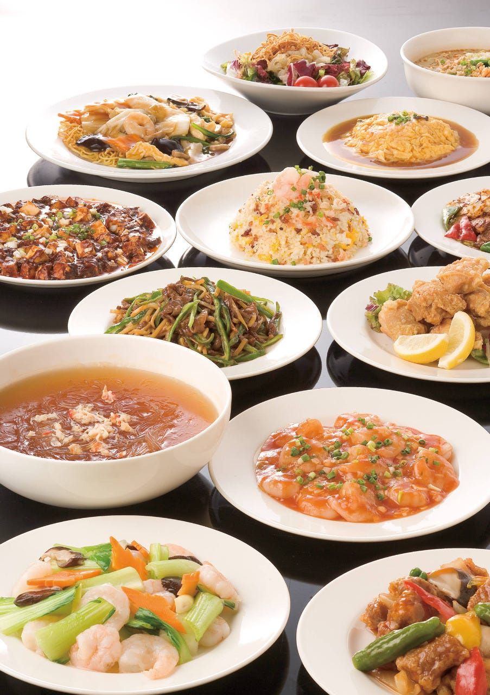
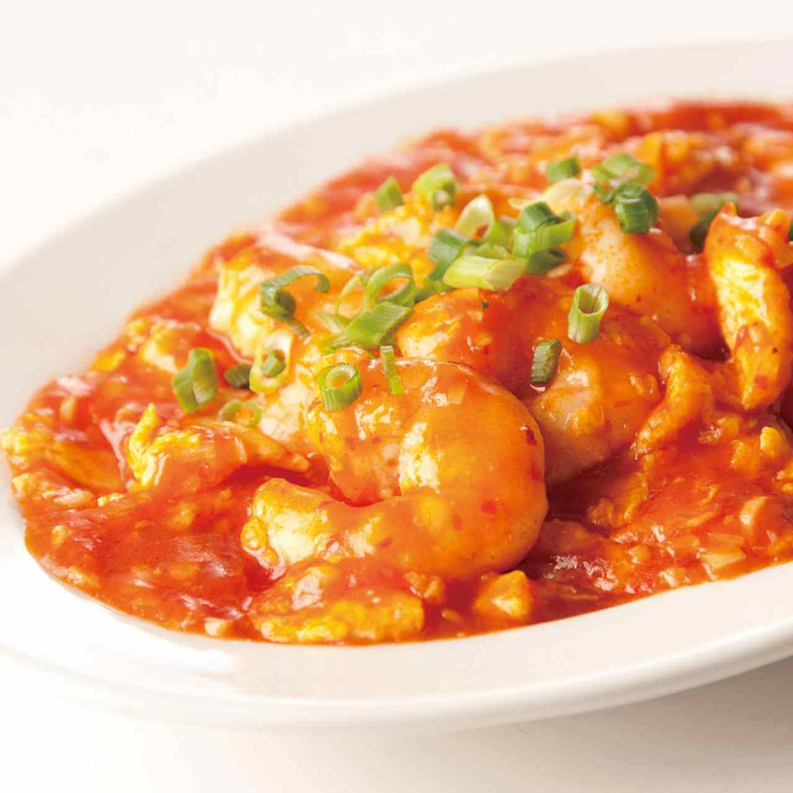
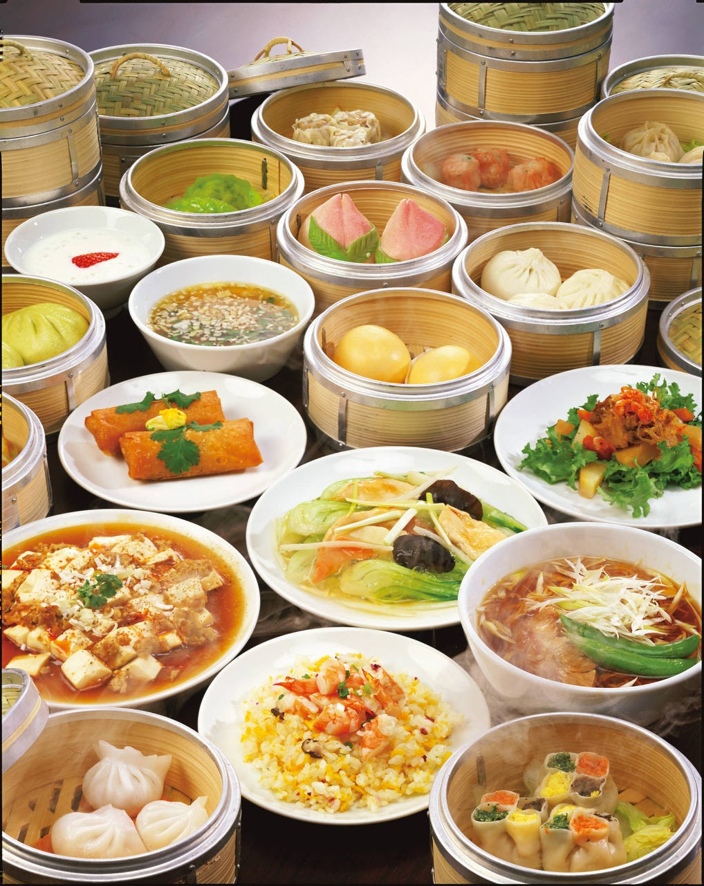
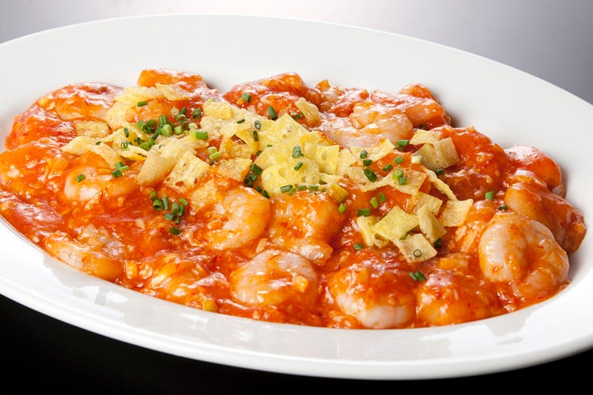
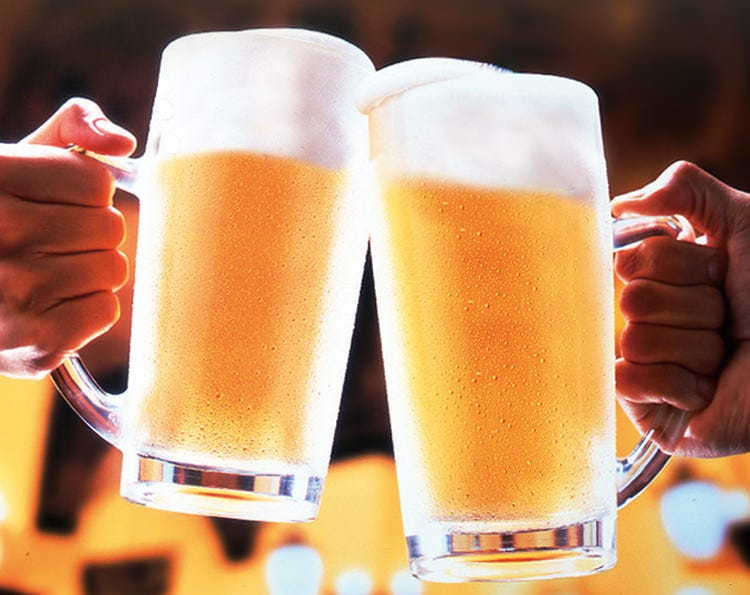
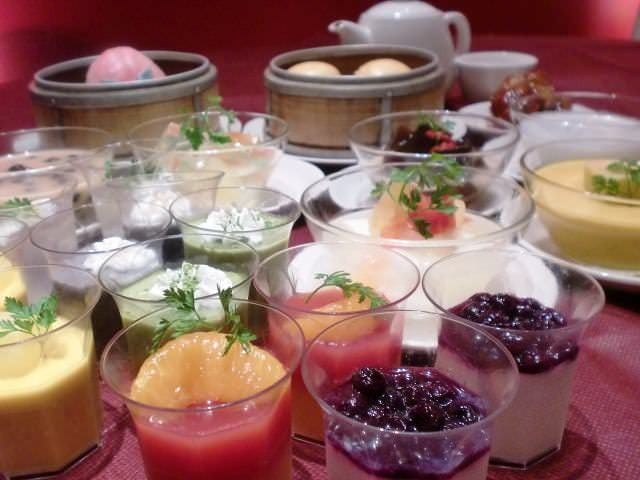
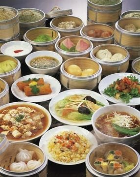
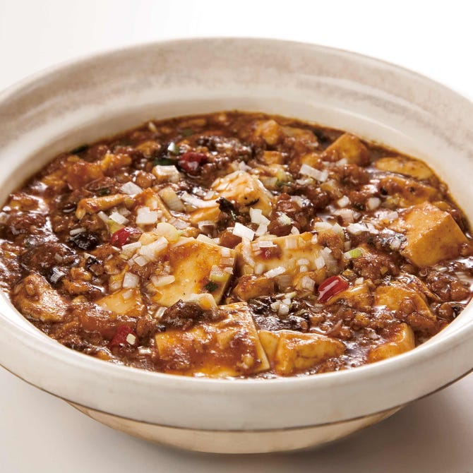
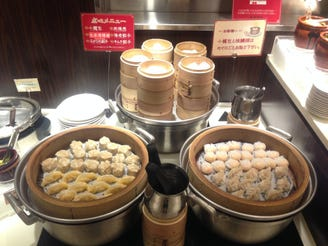

Galerie photos









Kevin, Loïc, May Nhia, Stéphanie, Estelle
Du 5 Avril au 27 Avril 2026
Buffet chinois à Namba Parks (6F) avec dim sum et plats chauds, simple d'accès pour un groupe à Osaka.









Hong Kong Chonron Namba Parks est une option pratique pour un groupe de 5 : emplacement central à Namba, buffet chinois varié, grande salle et horaires larges.
Conversion indicative sur base 1 EUR = 183.02 JPY (BCE du 04/03/2026). Taux variable.
Aucun lien de réservation en ligne direct n'a été trouvé sur les pages officielles consultées.